k-Day 165｜物產豐隆
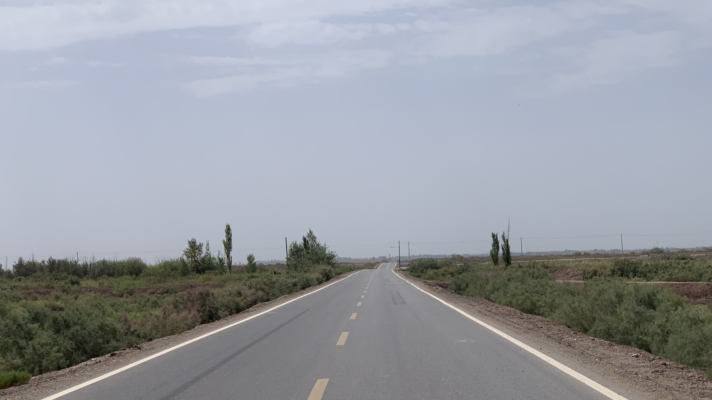
距離喀什只剩160公里，決定離開國道感受鄉村小路的風光。
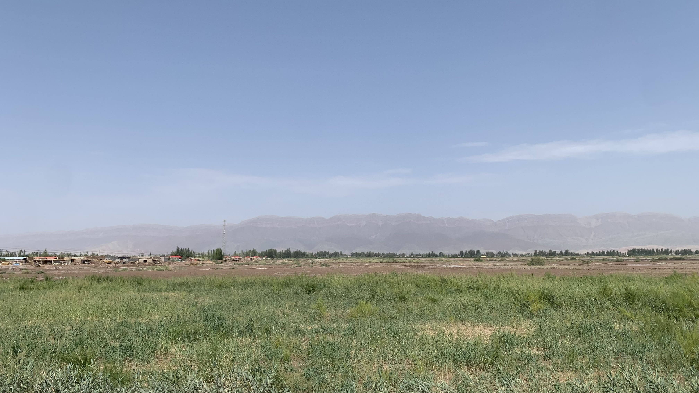
沒什麼車，兩旁都是綠色作物，跟國道上乾燥的景色完全不同。
今天久違的愉悅，在田間大聲唱歌。
太陽有點大，途經鄉鎮佈告欄，躲在陰影後喝飲料。照片中間的大叔先開著三輪貨車回家，經過時問了句：「Yaxshimu?」
我回了一句：「Yaxshimu！」竟然開始一陣維語輸出。
旁邊正在嗑瓜子的小朋友會說漢語，也一起湊過來，在每個路過停下的村民們和我之間充當翻譯。
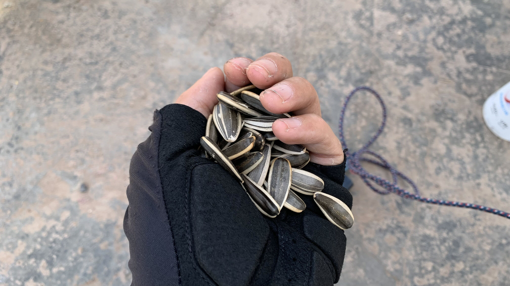
他們從口袋裡抓了一把瓜子分我吃。
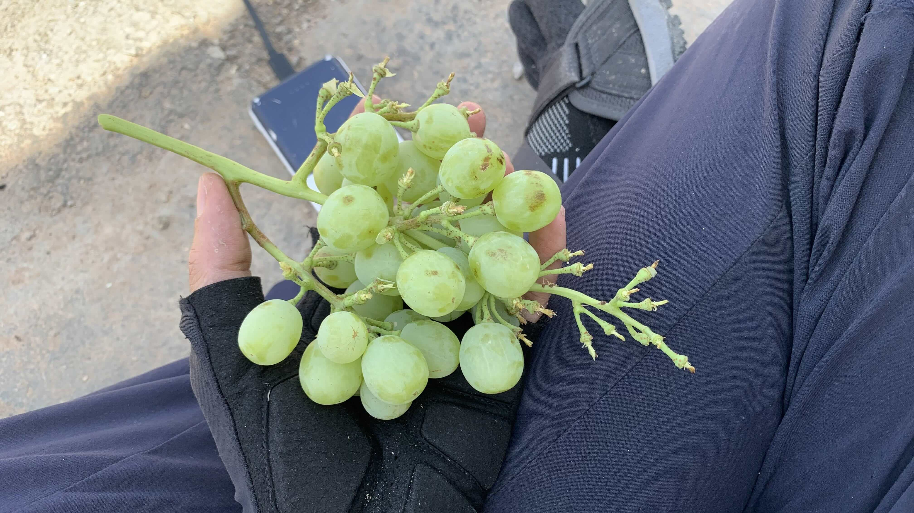
大叔對二十三號非常感興趣，蹲在二十三號旁邊觀察許久，回到家裡拿了一串葡萄出來給我。
「你們那兒也有葡萄嗎？也是一樣的嗎？」「你不會直接吃瓜子嗎？你們那兒也有嗎？你看，像這樣。」邊嗑瓜子邊吐殼的動作相當流暢。
兩個小孩很可愛，大概國一的年紀兩種語言都非常流利。南疆許多人都不會說漢語，二三十歲的說來還帶點口音。相較之下，十幾歲的小朋友在漢語和維語之間切換得非常自然。
村民們來來去去，他們一直在我旁邊繞，看到運動相機非常興奮，拿下來讓他們拍一段影片。他倆拍完後還給我，跟我說：「你回去可以做紀念，給你的家人們看。」
「我可以把影片發給你們，你們想放網上嗎？」
「不用發給我們，這是給你做紀念。不要發到網上，警察會來跟我們說話。之前有一個美國人，他放網上，警察和我們說不要和外國人隨便說話。」
我完全沒想到會有這樣的事。
兩個小朋友應該是要去參加哥哥的婚禮才是，但他們一直拖拖拉拉在附近晃蕩。
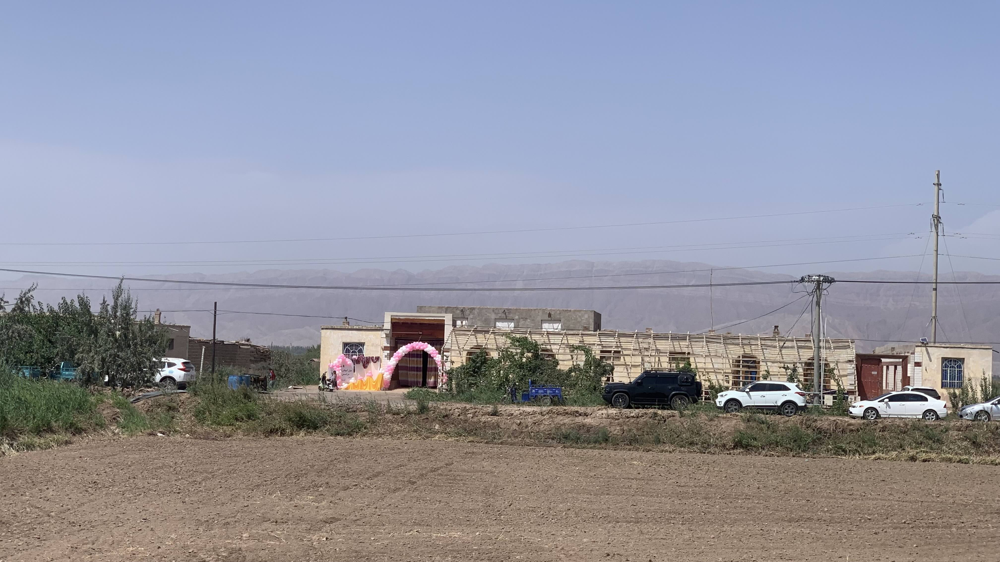
出發不久就路過紅白氣球佈置的疑似婚禮現場，莫非就是他們哥哥的婚禮？
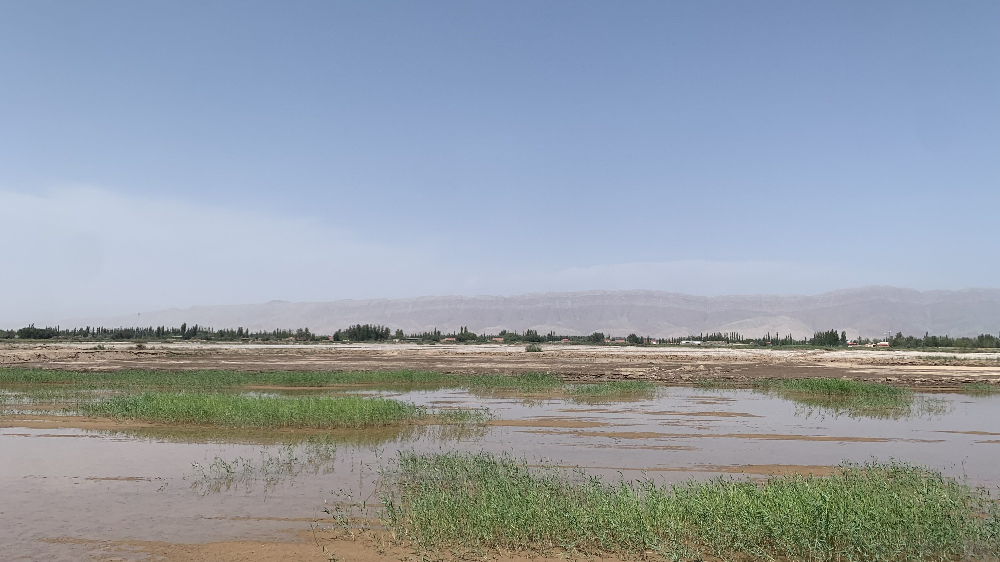
路過像這樣的水田，上面的草被風吹的搖來搖去，是國道上沒有的清涼的景象。
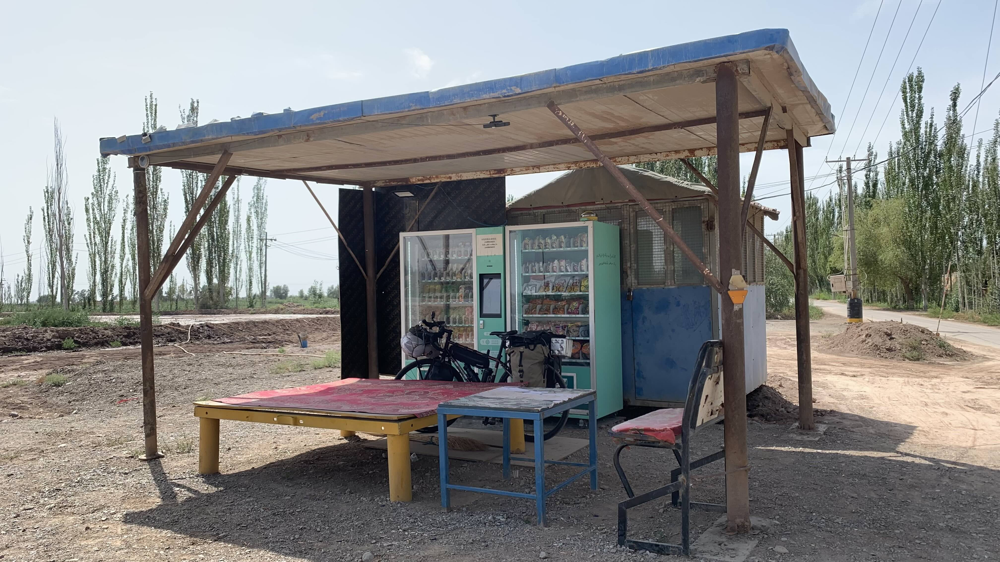
鄉道兩旁有許多這樣的自販機，沒有特別想買什麼，就是體驗看看。
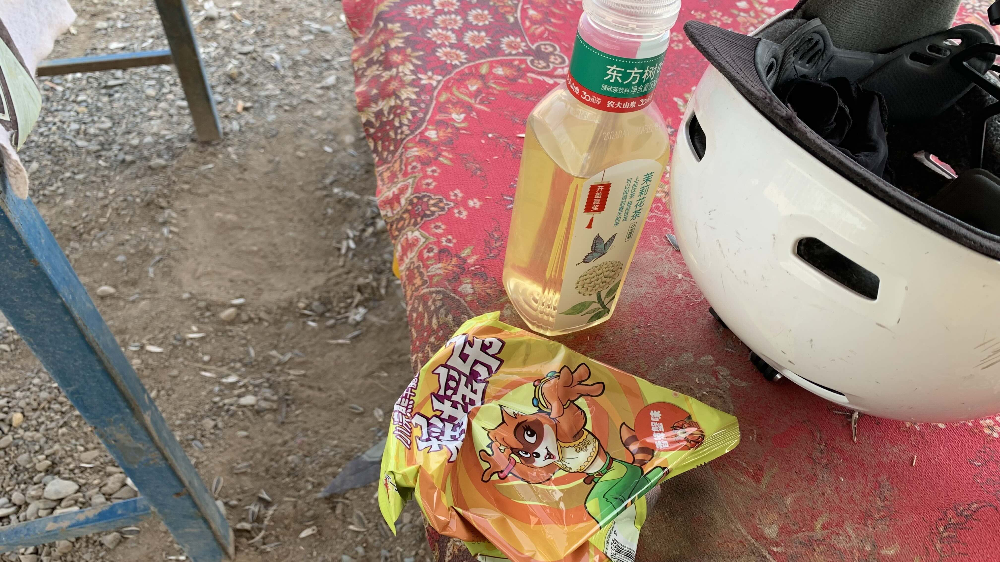
一瓶茉莉花茶和小浣熊脆麵，脆麵的容量相當雞肋，給嬰兒吃的份量。
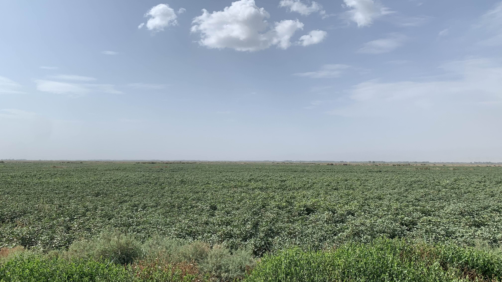
這些綠色作物是什麼呢？
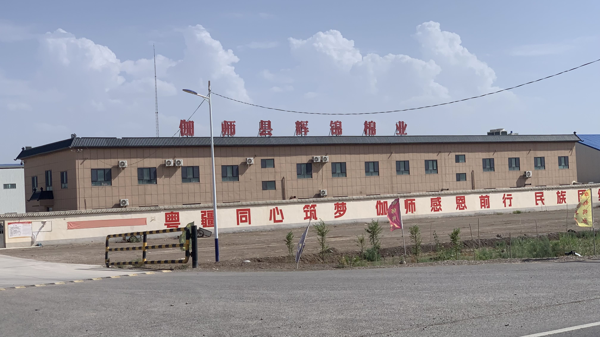
經過一間明顯是廣東人到這裡開設的棉業工廠，外牆寫著「粵疆同心築夢 伽師感恩前行」。想起剛才的兩位小朋友和我介紹此地農畜產，有牛羊雞、西瓜、哈密瓜、棉花等等。
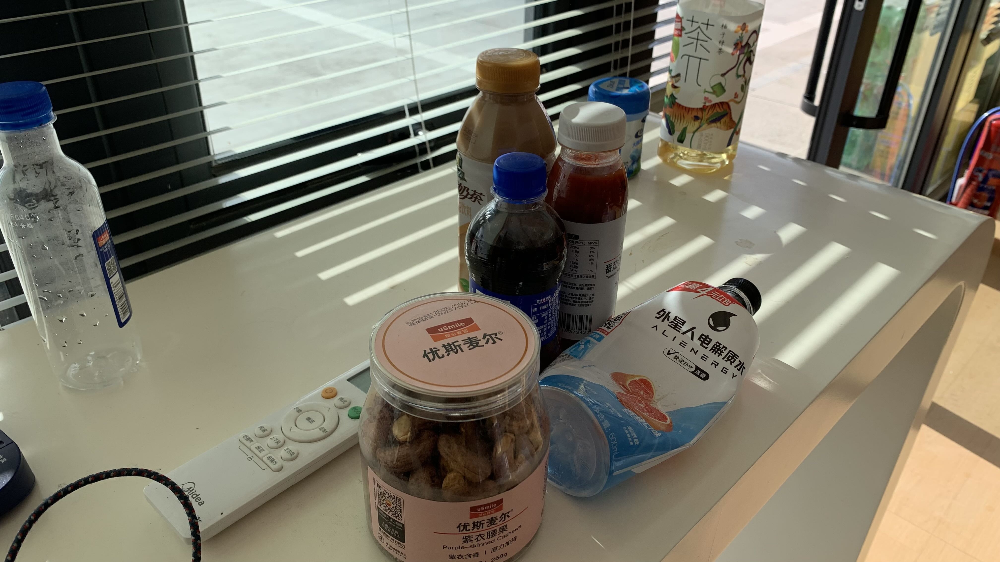
距離伽師市區不遠了，找到一間看起來很新的中油進去吃飯休息。裡面的員工有漢族也有維族，漢族員工是不會說維語的。
其中一位員工看我在貨架上找吃的，跟我說這個紫衣腰果是他們自己的產品，本來四十多塊，現在特價28，剩下最後一瓶。結帳後又拿了一瓶西梨果汁給我看：「這也是我們自己的，西梨是這裡的特產。」
另一名員工問我是台灣哪裡人，我說高雄。他說那市長是叫蔣萬安吧？我說不是的，而且你們怎麼都知道台灣的市長是誰？前幾天的加油站也總是有人張口就說出蔣萬安、陳其邁之類的。我反問他們自己的市長或縣長是誰，他們反而笑著說不知道，這些跟他們沒什麼關係。
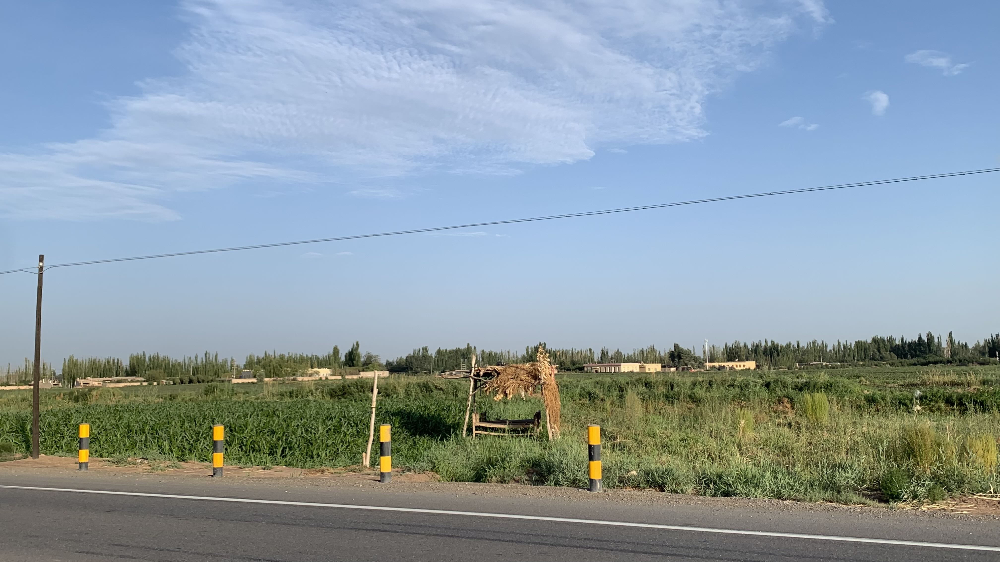
在加油站休息到晚上八點才出發，新疆的田邊經常出現這類架高的棚子，偶爾有老人小孩在上面睡覺。
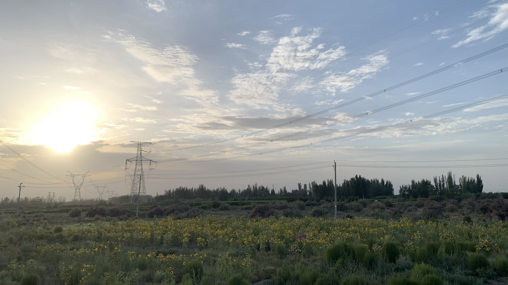
此處作物是向日葵，剛剛吃的瓜子可能也是本地產的？
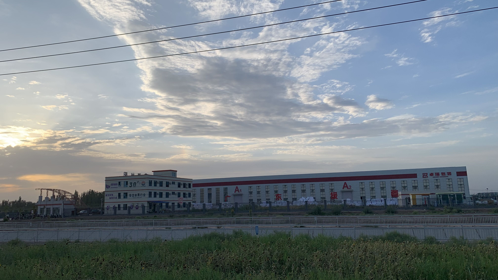
又是一間「廣東援疆」工廠，做的是水果包裝的生意。
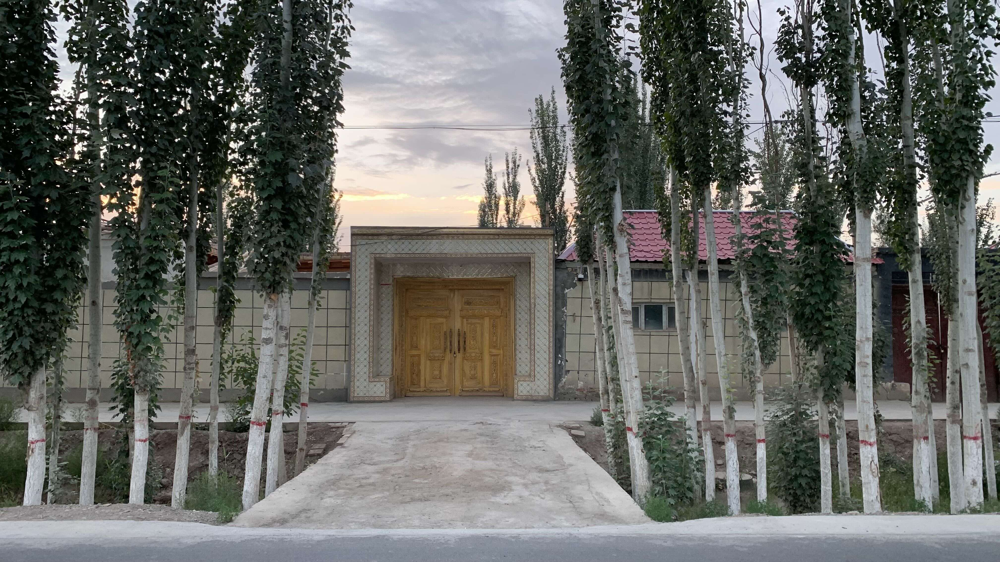
進入城鎮後，兩旁民宅的大門相當氣派，裝飾華麗，而且一間比一間厚重。
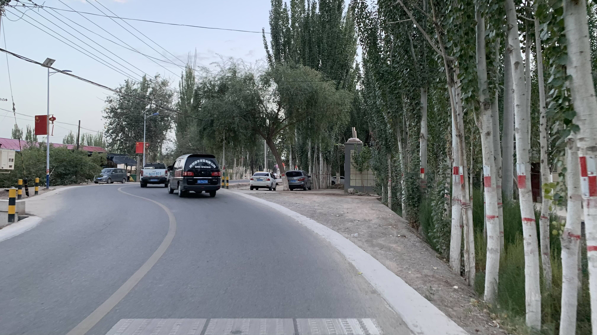
就快抵達伽師市區了。
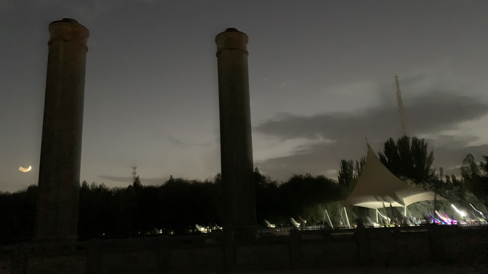
抵達預定露宿的公園時，天已經全黑了。推著車找了陰暗的草叢，就把毫無意義的帳篷內帳立起來。躺進去之後，草叢裡的蚊子開始他們的晚餐。
閉著眼睛默默承受一切，突然頭頂上方有人類移動的聲音。跳起來從內帳紗網裡抬頭一看，有位帶著小孩的大叔正想拉開皮帶尿尿。被我這一個動靜嚇到，大叔的眼神左右掃射，應該是剛滑完手機處於夜盲狀態，他完全沒發現腳下的帳篷。
大叔落荒而逃後，又剩下我一個人和蚊子共度夜晚。明天抵達喀什後一定要修好拉鍊，再這樣下去可不行。
今日花費：飲料 17、販賣機 6、飲料 16.6、紫衣腰果 28元